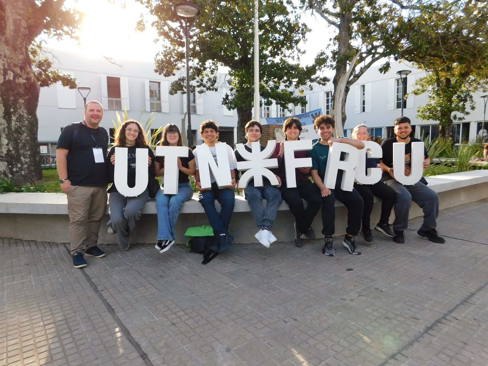

Participaciones, Eventos y Congresos
Representando a las y los estudiantes de Analista Universitario en Ciencias de Datos en ferias vocacionales, congresos nacionales y encuentros académicos de ciencia y tecnología.
Expo UNLu 2026: Difusión de la Carrera de Ciencia de Datos
Durante la jornada de la Expo UNLu, el equipo y estudiantes de la carrera presentaron a futuras y futuros ingresantes el alcance laboral, el perfil profesional y las metodologías que se aprenden a lo largo de la cursada en la Universidad Nacional de Luján.
Salud & Medicina
Análisis de datos clínicos, modelos de diagnóstico predictivo y optimización de gestión hospitalaria.
Finanzas & Banca
Evaluación de riesgos crediticios, detección de fraudes en tiempo real y algoritmos de inversión.
Retail & Comercio Digital
Predicción de demanda, personalización de recomendaciones y optimización de logística y stock.
Industria & Agro
Mantenimiento predictivo de maquinaria, agricultura de precisión y control estadístico de procesos.
Temas Técnicos Presentados en la Expo UNLu
Análisis de Sentimiento & Pipeline de Datos
Demostración práctica de cómo un texto crudo de clientes (opiniones y feedback) pasa por tokenización, remoción de stopwords, vectorización densa (BERT/RoBERTa) y clasificación de polaridad positiva/neutra/negativa.
Modelos Predictivos de Demanda
Explicación de cómo evitar el data leakage mediante validación cruzada temporal (rolling folds) y modelado con LightGBM, XGBoost y Prophet para pronósticos con 6.4% de MAPE.
Modalidades de Cursada en UNLu
- Presencial: Clases teóricas y prácticas en aula e interacción con laboratorios de computación.
- Semi-presencial: Esquema híbrido que combina encuentros virtuales sincrónicos y presenciales clave.
- Virtual: Cursada a distancia en Campus Virtual con instancias evaluativas presenciales.
Llegar a la Universidad & Boleto Estudiantil
Información clave para estudiantes compartida en la Expo:
CACIC 2026: XXXII Congreso Argentino de Ciencias de la Computación
Por primera vez en la historia de la UNLu, la carrera de Analista Universitario en Ciencias de Datos estuvo presente en el congreso más importante de ciencias de la computación del país.
Una delegación de estudiantes de nuestra carrera viajó y representó a la comunidad académica de la Universidad Nacional de Luján, participando de exposiciones científicas, talleres de frontera en Inteligencia Artificial y estableciendo vínculos con universidades de todo el territorio nacional.

¿Querés participar en los próximos eventos?
El CECiD gestiona traslados, certificados y acreditaciones para que más estudiantes puedan presentar proyectos y asistir a congresos y jornadas tecnológicas.